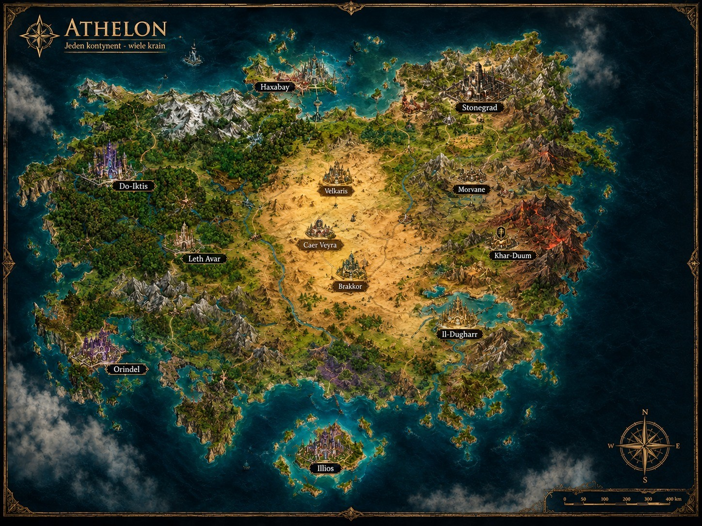

Atlamar & Ruunis
Dwa światy · Jedno Rozdarcie
Atlamar i Ruunis łączy wspólna przeszłość, rozdziela zaś wydarzenie, którego prawdziwe przyczyny pozostają przedmiotem sporów.
Dwa światy. Jedno Rozdarcie. Prawda, której nikt nie zna w całości.
⌖Athelon – mapa kontynentu

Atlamar · kontynent Athelon
Rozmieszczenie krain i miast
Północny wschód: Stonegard - Stonegard, Morvane i Khar-Duum. Wokół Stonegardu leżą cztery mniejsze osady: Brackenridge, Fernwood, Stonebrook i Ironhollow. Nie są podpisane na mapie.
Północ i północny zachód: Varellis - Haxabay nad zatoką oraz Eryndor na zachodnich szlakach lądowych. Eryndor nie otrzymał osobnej etykiety na mapie, by nie zagęszczać ilustracji.
Zachód: Sylvaran - Do-Iktis w wielkim lesie oraz Leth Avar dalej na południe, w leśnych ostępach.
Środkowa pustynia: Konfederacja Wolnych Miast - Velkaris, Caer Veyra i Brakkor.
Południowy wschód: Aerath - Il-Dugharr, miasto wzniesione wysoko ponad ziemią.
Południowy zachód: niezależne Orindel. Południowa wyspa: Illios, związane z Athelonem, choć położone na osobnej wyspie. Vael Taris pozostaje niezależnym miastem; jego dokładne położenie na mapie nie zostało jeszcze ustalone.